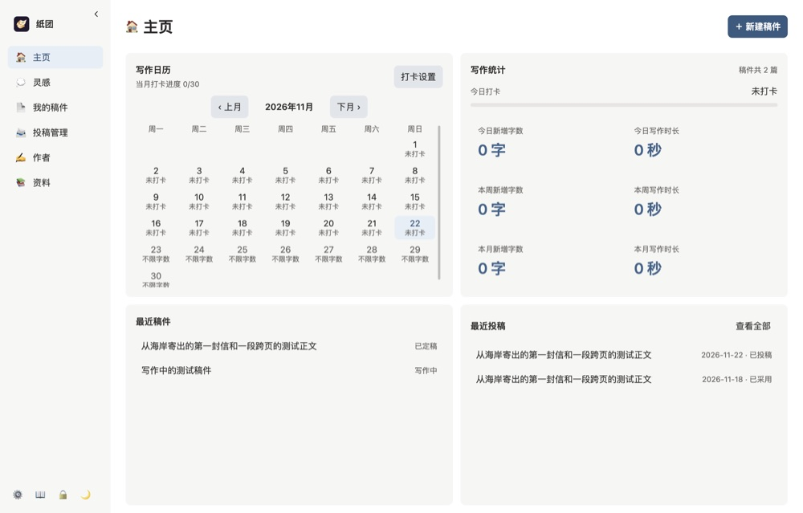
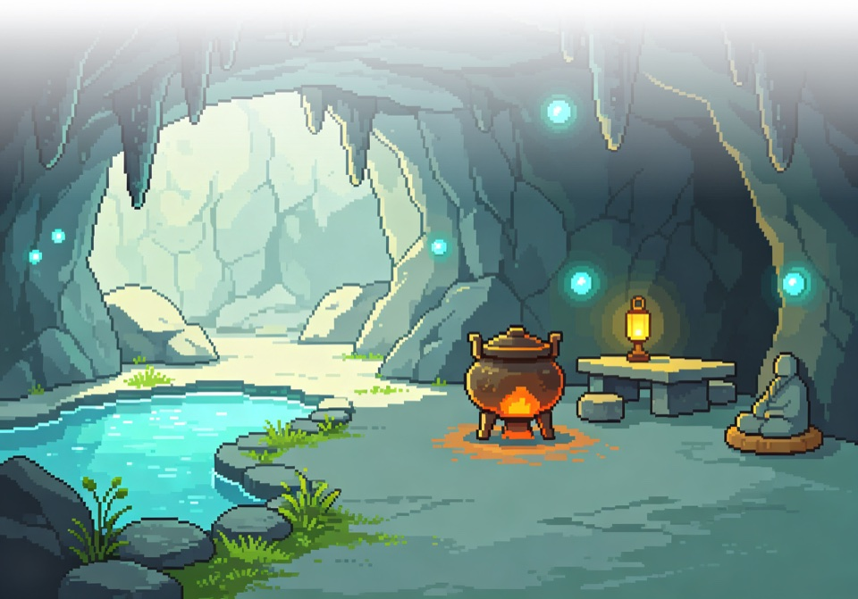
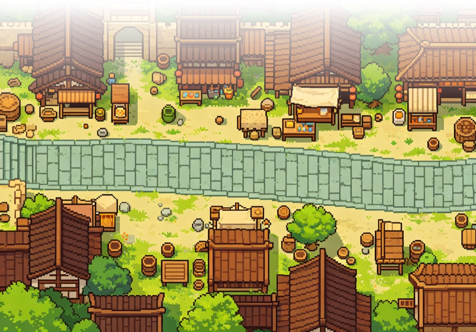

纸团 Paperball
给写稿人的桌面工具。从写作、定稿到投稿，把每篇稿件和它的投递记录放在一起。
我是 Link，一个经历比较杂的产品经理，做过 SaaS，也做过 C 端产品。

给写稿人的桌面工具。从写作、定稿到投稿，把每篇稿件和它的投递记录放在一起。
一款股票复盘工具，整理每日行情、个股观察和次日计划，区分客观数据与个人判断。


一款开发中的修仙放置游戏。在洞府里积累资源、培养角色，逐步推进修行。
为活动主办方设计搭建虚拟会场的 SaaS，让空间编辑、流程配置和参与者互动可以复用。
把室内定位能力整理成工具和 SDK，让售前演示、项目实施和验收有一套可复用的流程。
整合线下会员触点，把屏幕应用、优惠券和数据管理接入同一套运营后台。